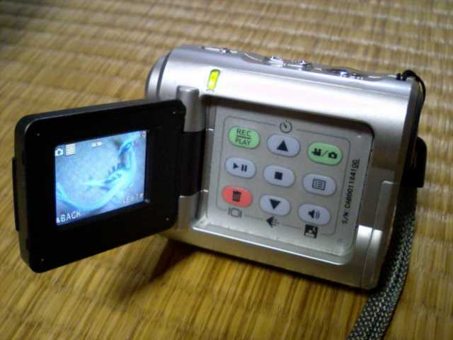

愛用のデジカメ

「デジカメのメーカーはどこですか」と聞かれると大抵「その他」に分類されるI-O DATAの「MotionPix AVMC211」。
2003年の製品らしい。買ったのは2005年末。中古屋で7千円台だった。
固定焦点で接写ができないとかフラッシュないとかそもそも写り悪いとか色々欠点はあるが、
その中でも一番の欠点は画面上で拡大できないからPCに繋がないことにはピントが合ってるか確認できないということ。
そんな安物でも、「日の当る屋外で」「遠くのものを」「手ブレせずに」撮れば、それなりには写る。
虫眼鏡や親の老眼鏡などを駆使して接写も無理やりこなす。
付属のSDカードがたったの8MBしかなく約11枚しか撮れない。128MBあたりでいいから数百円で売ってないかな…。
2006年、発売元をセガトイズに変えておもちゃデジカメ「ムービーキャリア」として華々しく再デビュー。
定価13440円、2006年12月現在実売9800円。
付属のSDカードが32MBになってるのが羨ましい。
他にもjpg圧縮率が3段階から4段階へ、ズーム機能(デジタル)が最大2倍から4倍にアップ。
音声の録音も単体でできるようになった(旧機種でもムービーに音声を入れることは可能)。